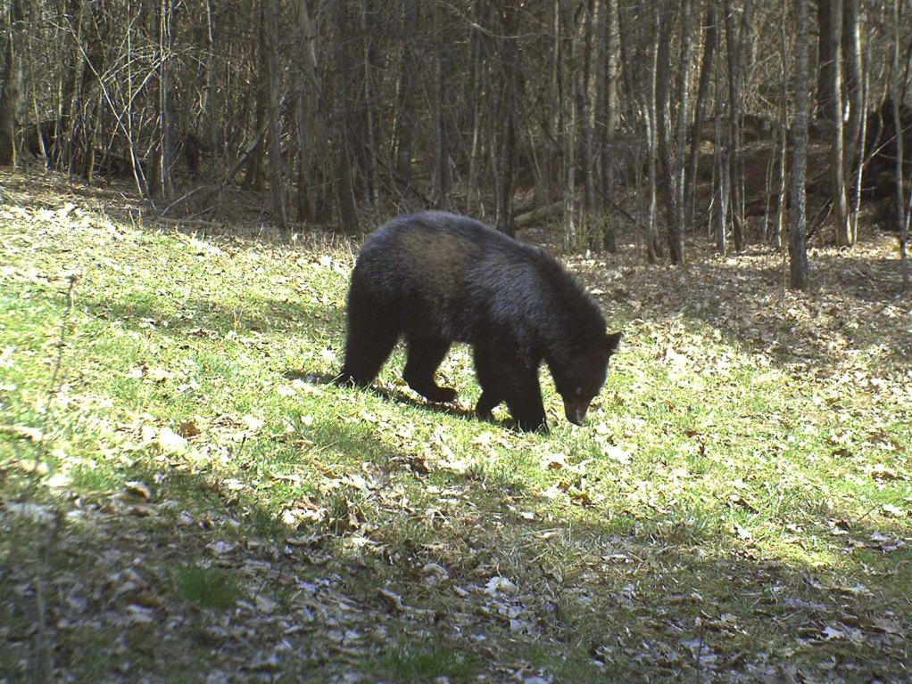
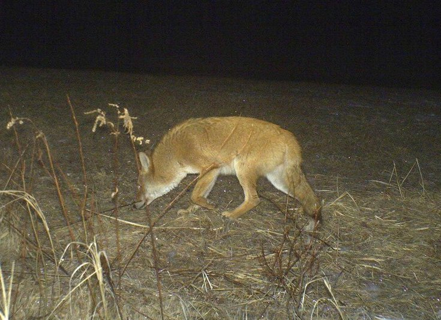
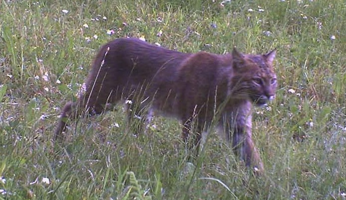
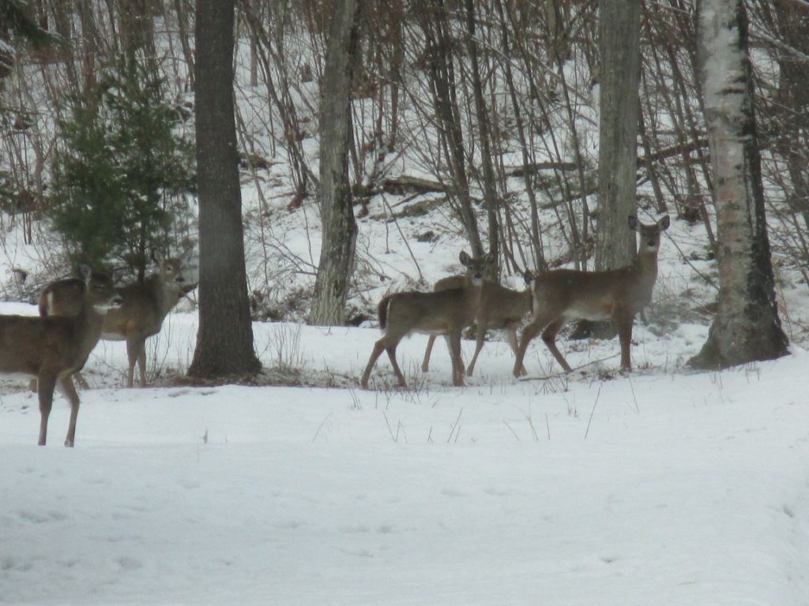

WOODLANDS
| Contents:
Overview The Forest Geology Wildlife Mammals Birds History Deforestation Sheep Reforestation Finding History in Fairlee Forest Sustainable Forestry Today Stewardship Management of Fairlee Forest |
These essays are primarily about Fairlee’s public forest lands -- lands which are open to visitors and for which information is available. Morey Mountain and Sawyer Mountain are also accessible via public trails thanks to the generosity of private landowners.
Much of the general information below will apply equally to all the wooded hills between Rt. 244 and the Bradford line, the Connecticut River and the West Fairlee line, which in the larger sense are all “Fairlee forests.” Information about forest types and wildlife habitats specific to Fairlee’s large private forest tracts enrolled in the state’s “Current Use” program (see below), are not available online but together could greatly expand our understanding of the larger Brushwood forest ecosystems. |
THE FAIRLEE FOREST
The Fairlee Town Forest and William H. Lange Memorial Forest (collectively called the Fairlee Forest) consists of 1,573 acres (2.5 sq. mi.) of wooded hills and wetlands. The land was acquired by the Town in the early 1980s, roughly half as a gift from the family of William H. Lange, the rest through a matching grant from the US Department of Interior’s short-lived “Heritage Conservation and Recreation Service” program. The federal grant made it possible for the Town to purchase additional parcels abutting the Lange properties. Together these properties were to be preserved primarily for wildlife habitat and public recreation, with timber harvesting done primarily in service to forest health and habitat improvement. The Gravel Pit off Lake Morey Road is considered a third component of the Town Forest. A 148 acre parcel in the middle of the Town Forest remains in private hands (See FFF’s “Fairlee Forest Trails Map”).
Fairlee Forest is the central section of a 10,000-acre block (ca. 16 sq. mi.) of undeveloped public and private forest land known as the Brushwood Forest or “Brushwood Wilderness.” The large size and undeveloped, un-fragmented nature of Brushwood wilderness makes it prime habitat for virtually every species of wildlife native to northern New England. It is in turn part of a 148,000-acre sector of relatively undeveloped forest land considered one of the state’s most intact bear habitats. While there are larger ‘wilderness’ blocks in the Green and White Mountains, this is one of the most extensive so close to the population centers of the Connecticut River Valley.
Topographically, Fairlee Forest is a densely wooded landscape of steep hills rising abruptly from the 417’ elevation of Lake Morey on the East, over a cluster of hills that peak at 1776’ on Bald Top Mountain and 1626’ on May Hill, then descend to an elevation of about 1000’ at Blood Brook Road and the upper Blood Brook valley on the west. Two other un-named peaks over 1500’ dominate the south arm of the Town Forest. These hills are creased by numerous tributaries of the three principal streams that tumble eastward down the mountain passes to Lake Morey: Big Brook on the north, Glen Falls Brook in the middle, and Big Pine Brook on the south. Glen Falls Brook is notable for its fine 80’ cascade and waterfall just above its entrance into the lake [photo]. [Peter’s geology plus link to “Natural History of Vermont Mountains” article by Nancy Bazilchuk]
Fairlee Forest is a prime example of Vermont’s prevalent “Northern Hardwood Forest” type characterized by a wide variety of hardwood and softwood species. These include white and yellow birch, hemlock, white pine, red and white oak, red and sugar maple, beech, aspen, white ash, basswood, hophornbeam, and fir, among others. Like all large woodlands, Fairlee Forest has many micro-forest types within it, depending on soil, exposure, and other factors favoring certain specific combinations of tree species. Foresters call these distinct populations “stands.”
Healthy forests make healthy habitats for wildlife. Healthy forests have a diversity of tree species and three substantial horizontal layers: a canopy layer, an understory or middle layer, and a forest floor lush with shrubs and herbaceous plants. The more diverse and vigorous each layer is, the better the habitat and more species of wildlife the forest can support.
Since Fairlee Forest has not been extensively logged since the 1980s, many of its trees are mature enough now to have closed the forest canopy over all but Bald Top Mountain, a few remaining log landings, and larger sections of wetland. Since the 1980s, natural tree mortality and events such as severe wind and ice storms have been the only disturbances creating openings in the forest canopy sufficient to allow sunlight to reach the forest floor during the growing season, and these openings are relatively small. Over time, lack of sunlight can suppress the germination and development of species like red maple, basswood, ash, and pine that are less shade-tolerant, thereby decreasing the diversity of tree species and also of wildlife habitats. Many songbirds, game birds, and mammals (like deer) prefer to feed or nest around edges of forest openings or in the forest understory. A forest with many small to medium canopy openings and a good understory and floor will attract more birds and wildlife.
Except for its currently dense canopy layer, Fairlee Forest is considered relatively healthy by professional foresters, with most trees in the 50-80 year old age bracket. In many sectors, however, the closed canopy has resulted in an almost complete absence of understory trees and reductions in native ground covers. Shade colonizers like hay-scented fern and invasives like Japanese barberry move in, crowding out native shade-loving plants like trillium and lady slipper, plants that are also suffering from over-browsing by deer. [https://suite.io/albert-burchsted/5qwv2a5].
Responsible logging is an important tool in creating openings in a dense canopy like ours to encourage regeneration of desirable tree species at different levels while improving food sources, brushy cover, and nesting sites favored by wildlife. Since openings also create opportunities for invasive non-native trees like buckthorn, foresters today use methods that hasten regeneration of desirable species after a cut, such as retaining seed-bearing “mother” trees and leaving slash (cut branches and roots) on site to become compost and shelter for developing seedlings. It may look messy for a while, but slash on the ground also makes excellent cover for small mammals and nesting song- and game-birds. A “clean” forest is a sterile forest.
The Forest Management Plan drafted in 2015 by Redstart Forestry Consultants for the Fairlee Forest Board describes in detail the various forest “stands,” geographic features, and special habitats in the Fairlee Forest and recommends specific “treatments” (tree harvesting) to improve the health and wildlife habitats in each stand over a 15-year period. Copies of the plan will be available at the Town Office, Public Library, and on the Town website [link to FMP PDF].
As surveillance tools like game cameras and drones come into common usage, it is becoming easier than ever to document and track wildlife populations in our forests. And as it becomes easier, more organizations and “citizen scientists” are joining efforts to survey our wild places and study the creatures that live there. The more we learn about ecosystems and the web of interrelationships between their components and inhabitants, the better stewards we can be.
| Black bears are often called our largest carnivore, although in fact they are omnivores and primarily vegetarian, living as they do mainly on seasonally available roots, nuts, fruits, seeds, and even leaves, as well as carrion and, when they can get them, fish, frogs, rodents, and the occasional fawn. To sustain their large bulk, bears may need to roam throughout very large areas in search of a meal, especially when preparing for winter. In the course of a year, Fairlee Forest bears may well utilize the entire 148,000 acre area designated as prime bear habitat by the VT Dept. of Fish and Wildlife (VFW) and will not hesitate to invade human neighborhoods in search of food, especially in spring and fall, when they have woken hungry after hibernating for months or are bulking |  Black bear. Photo courtesy of Dave Matthews |
|  Coyote. Photo courtesy of Dave Matthews |
The most numerous predator in Fairlee Forest is the Eastern coyote. Coyotes are not native to Vermont but have come to New England relatively recently from the West via southern Canada, where they interbred with the grey wolf. Thanks to genetic contributions made by the wolf, our coyotes are not the scrawny, long-legged, big-eared critters found in other parts of the US but rather handsome, robust animals with rich, full coats of varying colors. Often accused of killing deer, they do take some fawns but are no match for the larger, faster adults except when there is a crust on deep snow. According to studies done by Vermont Fish & Wildlife, their effect on deer numbers is insignificant. Coyotes live mainly on rodents, hare, other small mammals, wild fowl, plants, tubers, eggs, |
| The bobcat is another species returning to our forests after a long absence. Solitary felines about the size of a very large housecat (though males can reach 50 pounds), bobcats are seldom seen because they are most active at dawn and dusk. They live mainly on snowshoe hare, other small mammals, and ground-nesting birds but are also known to kill fawns and infirm deer in winter when crusty deep snow gives them the advantage. |  Bobcat. Photo courtesy of Dave Matthews |
The bobcat’s larger cousin, the lynx, has recently moved back into northernmost Vermont. While lynx are primarily boreal animals and not known to have come into our area, its even larger relative, the Eastern mountain lion (catamount) has been seen here. At least one specimen has been observed crossing into and out of Fairlee Forest. Of course, rumors of such sightings have circulated for years, but now they are being taken more seriously. Inveterate “tracker” Susan Morse finds increasing evidence of their presence in northern Vermont, and even the cautious Fish & Wildlife Department acknowledges their existence in the state. Mountain lions are major predators of deer and could do much to help keep deer populations in check. As these cats range over very long distances, those seen here were probably transients. So far, there have been no confirmed reports of resident mating pairs in this part of Vermont, but it may only be a matter of time and the forbearance of our hunters. Fortunately, it is illegal to kill either of our big cats -- or wolves and pine marten, a member of the weasel family valuable for its pelt.
Fairlee Forest boasts several members of the mustelid family, including fisher, mink, long- and short-tailed weasel (ermine), and probably the American river otter in our wetland. Evidence suggests the pine marten, another member of this family, may also be returning to our forest after a long absence. [photo] Martens favor large unfragmented forests with deep winter snow. If they haven’t yet become established in Fairlee, it may not be long before they are.
The largest herbivore in Fairlee Forest is, of course, the moose [photo]. While some of the big tracks we see around the wetland and on the forest roads and trails are from transient males, others are certainly resident. The normal range for moose is between two and ten miles, well within the scope of Fairlee Forest, and the tracks we see are more often of a doe and calf together than a solo roaming male. Our local moose population is, however, especially vulnerable to climate change. Vermont is at the very southern edge of their range, so as our weather warms, they will move farther north. Warmer winters also bring increases in winter tick infestations, to which moose are especially susceptible. When tick infestations are heavy, moose can lose so much blood and scratch off so much hair that they either bleed to death or die of hypothermia. In recent years the state’s moose population has declined significantly. Although the last two cold winters seem to have caused a rebound, winters like these are likely exceptions to the rule, not a trend. [http://www.vtfishandwildlife.com/library/Factsheets/Hunting_and_trapping/Big_Game/Moose_fact_sheet.pdf].
|
 White-tailed deer at the edge of the Fairlee Forest. |
White-tailed deer are the principal herbivores in Fairlee Forest, and we have enough of them to be concerned about their impacts on the forest ecosystem. We all love deer for their beauty and tasty meat; we do not love them for their raids on our gardens and cargo of ticks (mice are also important vectors for Lyme disease). What we are starting to learn, too, is that an over-abundance of deer in a forest can wreak as much havoc on native forest plants and tree saplings as on our garden plants, with a resulting impact on habitat depended upon by birds and other mammals. Valuable oak and sugar maple saplings are susceptible, as are many of our favorite native wildflowers. With no other large predator species to help keep deer in check, this job falls to disease, starvation , or hunters -- and even in Vermont, the number of hunters is in steep decline. |
Porcupines, snowshoe hare, raccoons, skunk, red squirrels (grey squirrels seem to prefer lower altitudes near town), flying squirrels, chipmunks, mice, shrews, moles, bats, voles and, in the wetlands, beaver, otter, and muskrat are among the other mammals in Fairlee Forest. [photo] You may not see many of them when you visit, but rest assured, they see you. Learn to recognize their tracks, scat, and other signs of their presence and you will begin to realize you are not alone when in these woods.
Over three-hundred bird species reside in Vermont at least part of each year. Many are evident in Fairlee Forest, including most of northern New England’s largest raptors and wild fowl. Among these are species until recently considered rare or endangered -- eagles, ravens, and turkeys. With wingspans over two meters (80”) wide, bald eagles can often be seen soaring overhead or perched near the forest edge and wetland. The white heads and tails of the adults are diagnostic, but the brownish young could easily be mistaken for golden eagles if the latter were not so rare. No eagle nests have been observed in Fairlee Forest for many years, though a very tall tree above the aptly-named Eagles Bluff lookout over Lake Morey would be an ideal spot, so it’s just a matter of time. The other big birds seen circling overhead (eagles rarely circle) are probably turkey vultures. Vultures are not forest residents but will visit the edges when there is exposed carrion.
Several species of hawk do nest in Fairlee Forest, the most common being red-tailed, red-shouldered, broad-winged, and sharp-shinned hawks. Others are occasional visitors, including the peregrine falcons that nest on the Palisades, also coopers, goshawks, and, in winter, even the rough-legged hawk from northern Canada. Of our local owls, the barred is the most often heard (“who cooks for youooo”) and most easily seen, since it is quite large (44” wingspan) and not exclusively nocturnal. But Fairlee Forest, at least at its edges, would be suitable habitat for the even larger great-horned and possibly the less common long-eared owl. Some years we also see the ghostly snowy owl, down from Canada when numbers of surviving young exceed available food sources on the tundra.
Fairlee Forest is home to at least one extended family of ravens, largest of the wickedly smart corvids. These are upland residents of rough terrain and, in Fairlee, seem to remain at altitudes above 800 feet. With impressive 53” wingspans, the raven family can often be seen doing acrobatic aerial displays over our hills and valleys. Their call is a hoarse ‘grawk!’ not a caw. And they have a pleasant burbling song, too, which is not surprising since they are actually considered songbirds. Notorious mimics as well, ravens will imitate a barking dog or a tapping hammer. Their much smaller cousins, the crows, who share this trait, know better than to wander into raven air space and generally remain down by the village.
In the wetland rookery we have the dinosaurian great blue herons, like feathered pterosaurs with 70” wingspans that gather there to nest each spring. And in the woodland we have many large families of wild turkey scratching around in the leaf litter and roosting in the trees. The sudden explosion and instantly vanishing purr of wingbeats beside a trail is most likely one of our abundant ruffed grouse. Male grouse are responsible for the resonant drumming sound, like a reluctant motor, in the early spring forest. Later you may see a flustered hen trying to hustle her large brood of unruly chicks across a trail. The wetland ponds are visited by migrating ducks, but the wood ducks and mergansers may be raising chicks in tree cavities near the water. Those cavities and the trunks of rotting forest trees that look like they’ve been bombarded by canon fire are probably the work of the lordly pileated woodpecker, with its jaunty red-peaked cap. These ample holes also serve as homes for mammals and barred owls, and nesting sites and group winter shelters for many smaller birds.
Magnificent as our large forest birds are, they can’t hold a candle to the smallest ones for courage, heart, and strength. The real jewels in our forest are the tiny, multicolored songbirds that come here every spring to raise their young after flying thousands of miles from Mexico, Central America, and South America -- some over open ocean. [http://vtecostudies.org/blog/the-blackpoll-warblers-daring-ocean-migration] Thanks to the growing number of global “citizen scientists” who report backyard birds to organizations like eBird, or who monitor specific species for organizations like the Vermont Center for Ecostudies, or assist scientists checking banded birds at their winter and summer habitats, we have acquired a considerable amount of data on bird migrations over the years. However, recent developments in GPS technology and super lightweight geo-locator tracking devices are showing us how truly extraordinary these long-distance flights are, and how perilous. [http://news.nationalgeographic.com/news/2013/06/130621-threats-against-birds]
Scientists compiling this information estimate that over five billion American songbirds make intercontinental flights each year, some logging up to 1,000 miles a day and round-trips of as much as 12,000 miles. Many of them do not survive the trip, which is fraught with hazards and obstacles. Storms, tall buildings, pet cats in our yards, wind turbines, chemical toxins in the foods they eat, and increasingly unpredictable conditions caused by climate change are just some of the dangers they face. Many leave their winter territories already weak and undernourished due to shrinking southern habitats and food sources -- if they haven’t already been killed for food, feathers, or sport. The weak ones won’t make it, but neither will many of the strong. America’s songbird populations are thought to have declined by over 30% in the past forty years, with loss of winter habitats and the migrations themselves being the weakest links in their lifelines [PDF of Audubon bird sheet]. If the northern nesting grounds were also to succumb to habitat loss and reduced food sources, many of our migrating birds would disappear completely. So far, only the field-nesting species like the bobolink are facing less hospitable conditions in the north as fields revert to forest, and farmers eager to get early crops of hay begin mowing before the young birds have fledged. For birds that nest in woodlands, the story is a much happier one.
Vermont’s forest environment remains the only strong link in the life cycle of America’s migrating songbirds. Regeneration of our vast woodlands has made it possible for survivors of the migration to recover from their journey quickly, breed successfully, and raise healthy, vigorous offspring, sometimes several broods a summer. Fairlee Forest plays an important role in this saga in part because of its location near the Connecticut River flyway. According to the North American Breeding Survey, a greater percentage of songbird species nest in Vermont, New Hampshire, and northern Michigan than in any other part of the continent. How fortunate we are to be on the receiving end of such a gift! And what spectacular birds they are, too: brilliant scarlet tanagers, iridescent indigo buntings, carnival-colored orioles, hummingbirds, vireos and flycatchers, robins and redstarts, and dozens of tiny warblers in every imaginable combination of colors and patterns, all filling the hills and valleys with song. [photos] The healthiest males generally arrive first, then the healthiest females, then the stragglers. Many are returning to the same location they left the previous fall, but their first stop will be the floodplain and its farmlands and small towns, which green up earlier in the season than the hills. There, emaciated from their journey, whole flocks fall like rain drops to fill up on insects and seeds before beginning the search for good nesting sites and mates. Our homes and yards are the gateways to these nesting grounds for the hungry, exhausted migrants. We can provide the welcome they deserve by refraining from using pesticides and other toxins on our plants, keeping cats indoors, and growing plants that offer adequate food, cover, and shelter. [http://www.massaudubon.org/learn/nature-wildlife/birds/landscaping-for-birds]. Once they have recovered from their journey, the migrants will seek nesting sites particular to their species. Some like to be near cultivated land and homes, others as deep in the forest as they can get. Some, such as the oven bird and Vermont’s state bird, the hermit thrush, nest on the ground, often in the middle or edges of trails, so watch for them when you hike! Others nest only in low vegetation at the edges of open areas, or over water, or in the understory layer of the forest. A few prefer to nest high in the forest canopy. A majority of songbirds seem to thrive at the borders of forest openings, which is the one type of environment Fairlee Forest has less of than is desirable, according to ecologists. These preferences for certain types of nesting sites are not just a matter of taste. They have to do with the species’ particular needs and behaviors. Some species require more shelter from the elements because both parents must leave the nest to forage, some need to be near the ground because their chicks take longer to develop flight muscles, some with bright colored plumage are more vulnerable to predators from below instead of above, etc. A healthy woodland with all these options will have the healthiest, most diverse population of birds. Fairlee Forest is such a place, and it will get even better as more small openings are created in the dense canopy.
“For years, ornithologists have been worried about the cerulean warbler, a small blue-and-white bird of the eastern woodlands. Studies have shown a population decline for the species in recent decades of 50 to nearly 80 percent in some areas. Biologists long thought that ceruleans needed mature deciduous forest, and were puzzled when the birds didn't breed in what seemed like good habitat. But thanks to newer research, they now know that ceruleans need broken mature forest, with gaps in the canopy—a condition not present in even-aged woodland created by modern forestry practices. Modify a mature forest to create gaps, and ceruleans will return.”
National Geographic Magazine, June 2013.
We are perhaps more familiar with the birds that remain in Fairlee throughout the winter since many are attracted to our feeders. The friendly chickadees, svelte nuthatches, pine siskins, finches, redpolls, grosbeaks, blue jays, titmice, woodpeckers, and – at lower elevations --cardinals are among the regulars. Others who normally migrate may remain here during unusually warm winters, and still others from subarctic Canada may show up here during very cold ones. A few, like the tiny golden-crowned kinglet, are insect-eaters so seldom come near our feeders.
How do these birds survive the cold, and what do they find to eat if we don’t feed them? Many plants retain seeds and fruits throughout the winter, and there are always fat grubs and insects hiding in rotten wood and the bark of trees. The little kinglets take advantage of small insects that emerge on sunny days. Many winter birds bulk up in the fall and can go for long periods of time in a state of torpor when unable to feed during the cold months. As for warmth, birds’ inner down can be fluffed up to increase insulation under their wind-resistant outer feathers by day. At night many species huddle together in tree cavities or other sheltered nooks, especially in thick conifer groves. Some are able to lower their metabolism and heart rate to reduce their consumption of oxygen during sustained fasts and storms.
Our ruffed grouse do quite well in winters with deep powdery snow, diving into it at night to roost in its insulating depths safe from wind, cold, and predators. By day they emerge to feed on soft buds and fruits of trees like aspen. Turkeys do better on crusty snow than powder, traveling on the surface between patches of bare ground where they can scratch up acorns, grains, insects, and whatever other edible material can be found in the litter. During storms they can fast for weeks if necessary, hunkered down in the shelter of dense conifer groves. Since adequate food is key to winter survival for all resident birds, our feeders and feed plots undoubtedly contribute to the wellbeing of many species, but all the birds that survive a Vermont winter deserve admiration for their resourcefulness and grit. The more we learn about bird behavior, the more we begin to understand how remarkable these creatures really are, and how vulnerable.
In 2013, ornithologist Steve Hagenbuch of VT Audubon conducted a comprehensive assessment of Fairlee Forest’s bird habitats. It includes information about the types of birds that are or could be found here, the kinds of habitat they prefer, and recommendations for habitat improvement that could be equally useful to private forest landowners interested in helping make our forests as hospitable to birds as possible, especially to the little migrants who come so far to raise their young. [PDF of Audubon Assessment]
The original forests of Vermont and New Hampshire consisted mostly of shade-tolerant species able to grow under the full canopy of parent generations. Typical were spruce, hemlock, yellow birch, beech, and sugar maple. Where natural disturbances such as hurricanes and epidemic infestations occurred, white pines, oaks, ash, birch, cherry and other sun-loving trees could get a start. Once an old-growth forest complex is cut, it takes a century without further disturbance for it to begin reconstituting itself and another to mature. [http://extension.unh.edu/goodforestry/html/7-5.htm]
Native Americans have probably hunted in Fairlee’s forests since the glaciers withdrew some 10,000 years ago. In recent millennia, Abenaki bands that grew corn, beans, squash, and tobacco in small villages along the Connecticut River (Kwanitekw, or “Long River”) floodplain during summer months moved into the hills to hunt deer and moose in late winter. While the closest major village to Fairlee (variously called Koasek, Cowasuck, Cowass, or Goesek) during Colonial times was near Newbury, earlier villages and smaller encampments had undoubtedly existed all along the floodplain wherever there was arable land and access to fish and navigable streams. Hunters would have made frequent short forays into the nearby hills for deer, beaver, and small game year-round. For more on Abenaki history: [flow@learningcollaborative.org]
Between 1600 and 1800, as European diseases decimated Native populations, European settlers gradually replaced the Abenaki on the choicest Connecticut riverbank farmlands and began felling the hillside forests. First it was for homesteads, farms, and livestock, then timbers and fuel for the railroads that moved up the river in the 1850s, and then the industries that followed the railroads. In the century and a half since the first English settlement in Vermont was established near Brattleboro in 1724, seventy percent of Vermont’s forests were cut down. This was most intense near rivers like the Connecticut down which logs could be floated to distribution points and mills.
By the 1850s, the clearing of forests and draining of wetlands, coupled with unregulated hunting and trapping, had drastically reduced Vermont’s wildlife populations. Beaver had all but disappeared, trapped to satisfy Europe’s taste for beaver hats. Native mountain lions (catamounts), wolves, and other predator species vanished completely. Deer populations had declined so precipitously by 1865 that, for the next 32 years, it was illegal to hunt them. Still, the demand for wood continued to grow unchecked. After the Civil War, logging became the largest and most profitable industry in Vermont. By the end of the 19th Century, even the northernmost forests were being carted off by rail to lumber and paper mills throughout the eastern United States and Canada.
Vermont’s forests were dealt a double blow with the introduction of Merino sheep to the denuded hills in 1811. By 1836, Fairlee had more than 5,000 sheep, according to Philip Robinson’s A History of Fairlee, Vermont. Sheep eat ground-cover plants roots and all. During the thirty years before the wool market collapsed, Merino wool yielded large profits for the farmers but stripped the deforested hills of all vegetation. The thin soil washed down slopes and filled streams with sediment, causing floods and depleting fish populations.
In 1847, George Perkins Marsh, then a U.S. Congressman for Vermont, published an "Address Delivered Before the Agricultural Society of Rutland County" advocating a conservationist approach to management of forest lands. This was followed in 1864 by his classic book, Man and Nature, about the dire consequences to the American landscape of wholesale deforestation and sheep ranching evident around his Woodstock farm. While sustainable forestry was a familiar concept in Europe and elsewhere, Marsh was the first to advocate sustainable management of forests, soils, and natural watersheds in America.
Marsh’s ideas gained traction in the work of Gifford Pinchot, director of the U.S. Forest Service from 1905 to 1910. In the 1940s, Pinchot’s conviction that “trees could be cut and the forest preserved at the same time,” found its way to Vermont in the person of our state forester, Perry Merrill. Merrill brought to Vermont the concept of the “working forest,” where harvesting of trees could be done in a way that did not alter the look and wildlife values of the forest.
In the 1940s and 50s, forestry programs in Vermont were largely focused on reforestation, maintenance of forest and tree health to sustain high yields, maintaining the environments the forests depended on, creation of municipal forests, and acquisition of more state land. As farming declined in the decades after 1930, the forests began to reclaim unused pastures and fields on their own, and the rest is history – or rather, evident in the lush green hills around us.
As for Vermont’s native wildlife, it has largely rebounded or returned as well. We even have confirmed sightings of catamount and -- in the Northeast Kingdom -- small populations of lynx. Vermont’s beavers began to make a slow comeback after 1910 when placed under the protection of state law. In the 1920s and 30s they got a boost with the reintroduction of specimens from New York and Maine by the Vermont Fish & Wildlife Department. By the 1940s and 1950s, beaver were once again well established in the state. The first open trapping season (15 days) occurred in 1950. Aerial surveys conducted on the Green Mountain National Forest indicated that beaver population levels had increased by 120% between the 1980s and 1990s.
Moose are back now, too, and deer are so numerous along the Connecticut River watershed that they are consuming not only our home gardens but tree saplings and wildflowers important both to forestry and the forest ecosystem [link to Burchsted’s pink lady slipper PDF(free download)]. In spite of Vermont’s proud hunting heritage, some believe too few deer are taken here now to keep the population at a healthy level. Absent the wolf and catamount, the only predators capable of helping us keep deer in check are our Eastern coyotes, a unique, non-native species with some grey wolf DNA. But neither coyotes, bobcats, nor bears take many adult deer or have much impact on herd size, and few hunters welcome their help -- or competition. In fact, Vermont has an open season on its coyotes [http://northernwoodlands.org/articles/article/too-many-white-tails].
Finding History in Fairlee Forest
Traces of the 19th century logging and sheep ranching enterprises can still be discovered in the Fairlee Forest. Even on the poor, ledge-y eastern slopes of the hills, an observant visitor can find the hulking remains of old pasture trees, a short line of stones under the ferns, a depression where a shepherd’s hut may once have stood, a twist of barbed wire embedded in the bark of an old pine, a fragment of brick chimney.
On the west side of Bald Top, some upland sections in what is now Fairlee Forest were too steep for logging or sheep farming. There the forest remained largely undisturbed. A venerable 20-acre old-growth northern hardwood-hemlock stand, with trees thought to be over 150 years old, still exists on the west-facing southwest slope of Bald Top. Below these upland sections, the soils seem more fertile than the thin soils on the eastern slopes, judging from the native plants that grow there (though the soils map in the management plan for Fairlee Forest doesn’t bear this observation out). It was always prime grazing land, and among the trees on the lower elevations north, west, and southwest of Bald Top, one can still find the long stone walls that were meant to keep cows from farms along Blood Brook Road out of the “wild lands” above, or worse -- the marshlands along Brushwood Road -- according to Sheldon Miller’s fascinating but hard to find Recollections of Milldale Farm, edited by David Donath and published by the University of Vermont Press in 1976.
Many of the forest roads themselves go back two hundred years or more. Eastern sections of Knox Road extension as far as its big landing, where stone walls suggest an earlier farm, and most of Brushwood Road, have clearly been incised by centuries of cart wheels, their beds deeper in places even than the old stone walls that run alongside. Brushwood/Millpond Road was once the main route to markets in Bradford from farms in West Fairlee, and also the connection between West Fairlee and Fairlee. Cross Mountain Road was probably a horse track and before that an Indian trail, since it follows an obvious pass between the hills separating Fairlee and West Fairlee. Throughout the centuries of heavy logging, Cross Mountain, Knox, and Howdy’s trails were undoubtedly conduits for horse-drawn sleds and carts hauling logs down to the river. The open “landings” on these roads were staging grounds where logs were loaded onto the wagons, originally by hand with levers and, after 1882, with the help of a mechanical “steam donkey” winch. Many of what we call “trails” are old “skid” roads, where the trees were dragged down to the landings on a bed of greased logs set crossways. Later they could be drawn down by a cable attached to the steam donkey. Remnants of cable and other equipment can still be found along some of the old roads.
There were farmsteads along the western end of Brushwood Road as well. Until the early decades of the 20th century, a small settlement and school stood at Brushwood’s intersection with what is now Millpond Road. Today only trees rise from the old cellar holes of this community, but the mill dam is still there [photo]. Forest properties along both sides of the road remain in private hands and today are used primarily as family woodlots, hunting camps, and recreational areas for summer camps of the Aloha Foundation.
Land on the east side of Fairlee Forest between its northern boundary and the north side of Knox Road Extension seems not to have been suitable for cattle, judging from the absence of continuous stone walls, so after the wool market collapsed, the forest must have reclaimed those slopes rather quickly. Logging was always difficult and dangerous in Fairlee Forest due to the steepness of the hillsides, but wherever purchase could be had for the sawyers, one can see the stumps of trees cut on slopes facing the Connecticut River. Judging from the large log landings and roadbeds east of Bald Top, as well as the obviously shorter distances to both riverside and railroad landings, it appears that significant commercial logging continued on these privately owned eastern tracts until and possibly beyond their transfer to the public.
By the 1980s when the Lange family donated 770+ acres to the Town of Fairlee, and the Town acquired additional properties with federal matching grant funds, many of the private landholdings in the hills were primarily used for hunting and family woodlots. As the land passed to younger generations with less time and inclination to continue this lifestyle, many properties went unused. Later, construction of the interstate highway made owning vacation and retirement homes in places like Fairlee more attractive. Land values and property taxes rose accordingly. People soon became concerned that the resulting pressure to subdivide and develop what had been working forests and farm lands was threatening the very character of Vermont. A progressive state government quickly took decisive action.
At every level of government, incentives now exist to help large property owners keep their forest lands intact and manage them in ways that continue to produce economic value while maintaining and even improving the health, integrity, and long-term viability of the forest ecosystem -- its “sustainability.” These incentives make use of the growing body of scientific information about the “mechanics” of complex ecosystems – those intricate relationships between soils, water, microorganisms, climate, air quality, plants, insects, wildlife, trees, and humans that make up a healthy forest environment. While our understanding of these systems is still very limited, we do know that they function best when all the elements are present and kept in balance. Landowners who accept responsibility for managing their forests sustainably become more than managers; they become stewards. Stewardship, according to Merriam-Webster, is “the careful and responsible management of something entrusted to one's care.” What better way to describe the relationship we all ought to have toward the planet and our fellow inhabitants. Here is an excellent guidebook on forest stewardship: [www.vtfpr.org/urban/documents/TownForestStewardshipGuide.pdf] Another excellent resource is the VT Coverts program, which runs workshops for forest owners at various locations around the state.
Vermont’s Stewardship Programs
The “Use Value Appraisal” (Current Use) legislation enacted by Vermont in 1978 (Title 32, Ch. 124) [ http://fpr.vermont.gov/forest/your_woods/use_value_appraisal] has provided a solution for many of the large private landowners abutting Fairlee Forest whose annual tax burden had been exceeding the income they could derive from their trees and compelling them to consider selling the land to developers. Those who enroll in the program are able to keep their properties intact while paying lower “current use” tax rates in exchange for operating their forests under a Forest Management Plan. In so doing, they keep the land productive as well as healthy -- healthy for the forests and healthy for its wildlife. Today about a third of Vermont’s total land area and many of Fairlee’s large private forest properties are enrolled in Current Use. [www.ruralvermont.org/issues-main/current-use]
A Forest Management (or Stewardship) Plan is a written, long-range, strategic plan for managing a working forest to achieve the owner’s income-producing goals while protecting the forest environment. Such a plan includes owner’s goals, a set of specific objectives for each, an inventory and map of the natural resources on the land, including tree “stands” and wildlife habitats, and a defined schedule of activities (or conservation practices) that will help the owner achieve his or her objectives. Examples of such activities might include timber harvesting, wildlife habitat development, and invasive species and erosion control. A “management” plan is generally focused more on timber than a “stewardship” plan, but both take a holistic approach to the forest environment.[http://fpr.vermont.gov/forest/your_woods/mgmt_plans]
Conservation Easements also came into general use in the 1980s as a way to compensate landowners for protecting values that their lands provide to the public, such as scenic beauty or wildlife habitat or clean water. This is a voluntary agreement between a landowner and a land trust or government agency that limits the type or amount of development on a given property. Landowners continue to own, manage, and work their land, and can even sell it; however, the conservation easement permanently remains on the property. The easement is drafted specifically for the land in question, and identifies both the restrictions placed on the conserved property as well as the activities that are allowed. Public funds can be used to purchase easements, or a landowner can donate an easement to a land trust or government entity in exchange for income and estate tax deductions. Land simultaneously under Conservation Easement and Current Use will also benefit from property tax deductions. Conservation easements have successfully protected hundreds of thousands of acres of productive forestland in Vermont and millions of acres of open space in the United States. [http://www.vlt.org/land-protection/tax-implications] and [http://www.state.vt.us/tax/pvrcurrentuse.shtml]
While most public and many private forests in Vermont operate under Forest Management Plans today, town forests are not obliged to do so. What a town does with its forest lands is entirely at the discretion of its Selectboard unless constrained by the terms of the gifts or grants by which it obtained the land. Fairlee Forest parcels were donated for the purposes of public recreation and wildlife habitat, with logging to help defray expenses and maintain forest health. The 15-year Forest Management Plan the Town voluntarily elected to have drawn up in 2014 provides the Town with detailed information about the forest environment as well as specific objectives, actions, and timelines for achieving the founders’ goals.
While most nearby towns delegate management to an official conservation commission, Fairlee has preferred to appoint a “forest board” instead, with responsibility apparently limited to timber harvesting and maintenance of major logging roads. Only recently has the Fairlee Forest Board [http://www.fairleevt.org/?page_id=1422] undertaken to have a long-range forest management plan drawn up, in the process resurrecting the forest’s founding documents indicating that environmental conservation and recreation were to be primary functions of the forest along with timber harvesting.
The Forest Management Plan integrates environmental conservation, improvement of wildlife habitat, and improvement of overall forest health with timber harvesting. Much of the harvesting is to be done in service to the first three goals. [link to FMP when available] Logging under the plan began in 2014 with the clearing of views and invasive trees on Bald Top Mountain and an adjacent stand accessible by the same forest road. Over the course of the next ten to fifteen years, weather and market conditions permitting, selection harvests will be conducted every year across nine of the total eighteen “stands” throughout the Forest. Most will be group selection cuts, meaning removal of groups of between twelve and several acres of trees in each stand, leaving mother seed trees of desired species as well as standing dead trees, snags, slash, soft mast trees, and layered edges important to birds, soil health, and wildlife. In some areas, only individual trees will be cut, rather than groups, to thin out a stand; in others a few “patch” cuts are proposed where all trees will be removed to open up one or more acres for regeneration of white pine and other sun-loving species. The plan allows for buffer zones of 50-100 feet around wetlands, ponds, streams, and seeps. While not specified in the plan, loggers are required to repair forest roads and skid trails as needed, and to take all available measures to prevent erosion into nearby waterways.
Although most of the logging is to be done between late summer and deep snowfall each year when forest roads and soils are dry or frozen, visitors to the forest will be aware of the logging activity and its impact on roads and trails. Needless to say, we should stay away from active felling operations.
The role of Friends of Fairlee Forests is to supplement the work of the Forest Board by supporting the wishes of the original forest donors and the intent of the Forest Management Plan with regard to public access, recreation, habitat research, and education. To this end, we will be working with the Forest Board, VT Audubon, and volunteer birders to study the actual long-term effects of the proposed cuts on birds and wildlife in the vicinity. We begin in 2015 with baseline inventories of animals in selected areas scheduled for cutting and will continue monitoring changes in these populations as the selected cuts regenerate.
Invasive plants: The Forest Management Plan includes removal of exotic plants in the harvesting process. Vermont forests face threats both from non-native insects and pathogens against which native plants have no defenses, and from non-native plants that can out-compete native species because we have none of the predators or pathogens that kept them in check in their native regions. Forest ecosystems are complex mechanisms with countless inter-related parts that have evolved together and work in harmony. Altering any of the components has ripple effects on other components. Invasive non-native plant species, many of them escapees from our ornamental gardens, are a problem in our forest not because they are different, but because they can throw a whole ecosystem off balance. Forest stewardship involves controlling these invasions as much as possible, but it is also the responsibility of homeowners and landscapers to restrain from introducing invasive plants and controlling infestations on their properties. While some of the exotic plants spread by root sprouting or branch layering, most are dispersed by seed- or fruit-eating birds and mammals.
Today Vermont is faced with invasions of three exotic insects that could dramatically change our forests. The emerald ash borer and Asian longhorned beetle have already devastated forests in the mid-west and mid-Atlantic and are appearing on our borders. The hemlock woolly adelgid has been found in Windham County. Often these spread in transported firewood and logs, sometimes by unwitting campers, which is why it is now forbidden to carry firewood across many state lines. [Add links to pages on the EAB , ALB and woolly adelgid.]
The list of exotic invasive plants is far longer and includes many garden standbys: Japanese barberry, burning bush, and purple loosestrife are lovely but aggressive invaders. Others include Oriental bittersweet, autumn olive, common reed, common and glossy buckthorn, Japanese knotweed, giant hogweed, Norway maple, bishop’s weed, shrub honeysuckle, Japanese honeysuckle, wild chervil, and yellow-flag iris, to name a few.
Fortunately, the Fairlee Wetland is almost completely free of invasive plants, but parts of Fairlee Forest are plagued by Japanese barberry, shrub honeysuckle, buckthorn, and bittersweet. Trees in the forest show normal amounts of native diseases, but as yet none of the exotic pests are evident, according to Redstart Forestry Consultant’s survey for the Forest Management Plan.
The Management Plan includes measures to control invasives within the town forest. Nearby landowners can help by eliminating the offending species from their properties. For more information on how to identify and eliminate invasive species please visit www.vtinvasives.org. It is not a fight we can win, but one we can contain.